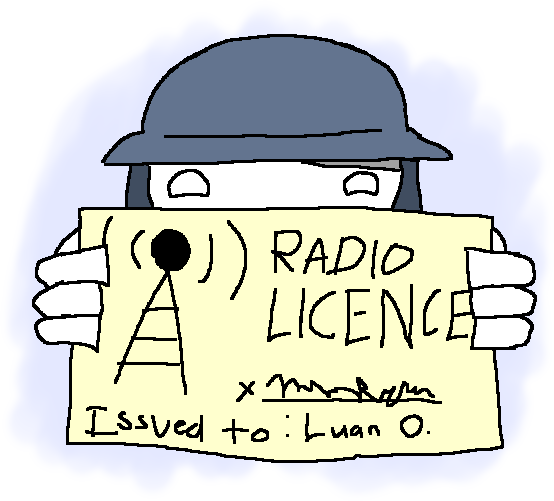

On Moon's Pub, micspammers must apply to become DJs to have permission to micspam in global chat. Once registered, DJs can micspam as long as they follow some simple rules.
Only one DJ can be active at a time. This is partially enforced with a special plugin that allows DJs to call dibs on micspamming. If they disconnect, become inactive, or abandon their micspam, they lose dibs. You can verify who currently has dibs on this by looking at the top right of your screen or running the !dj command. If you don't see their name, they don't have permission to micspam globally.
DJs are required to micspam quality, curated content such as music playlists and internet radio broadcasts. Ad-hoc global chats of voice clips, memes, and short/brief audio is not allowed.
Remember, you always have permission to spam in prox chat!